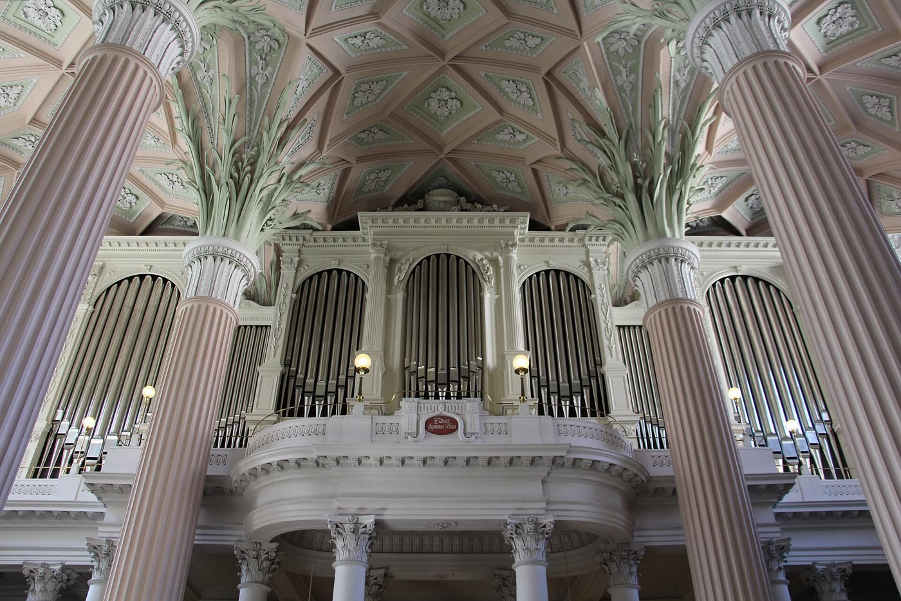
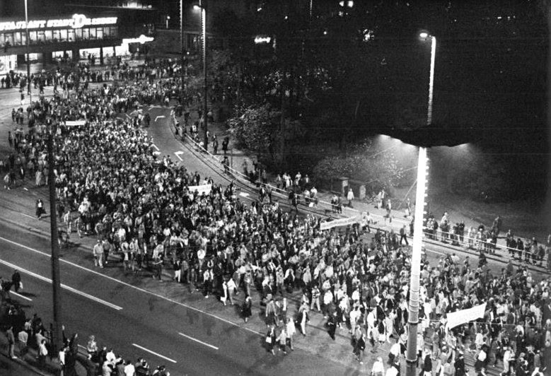
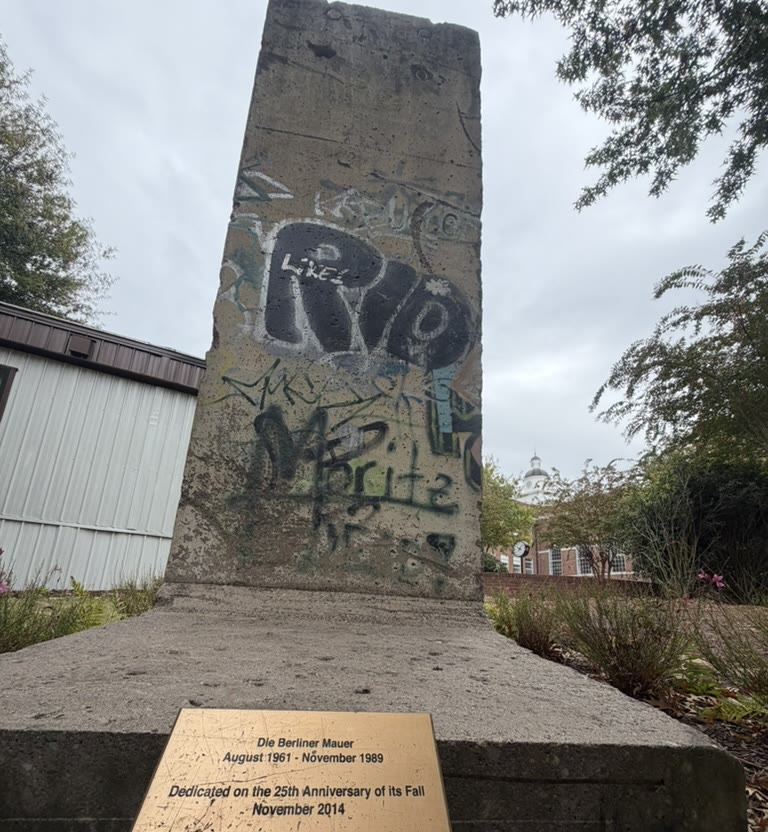

On Sunday, November 8, I preached part two of our series at GateCity Buckhead, Formed for a Purpose. Hazen opened the series the week before in 1 Timothy 1, and I picked up in chapter 2.
A sermon has a clock on it. A lot of what I studied, wrote and practiced this month never made it to the stage. Some of it was cut for time, some of it was cut because it pulled away from the main point, and some of it I just couldn't fit in 35 minutes. This is the longer version. If you heard it on Sunday, you'll recognize the bones. The rest is what landed on the cutting room floor, and I think a lot of it is worth keeping.
Paul is writing to Timothy, who is overseeing the church Paul planted in Ephesus. So this is church planting material. Here is the passage:
First of all, then, I urge that entreaties and prayers, petitions and thanksgivings, be made on behalf of all men, for kings and all who are in authority, so that we may lead a tranquil and quiet life in all godliness and dignity. This is good and acceptable in the sight of God our Savior, who desires all men to be saved and to come to the knowledge of the truth. For there is one God, and one mediator also between God and men, the man Christ Jesus, who gave Himself as a ransom for all, the testimony given at the proper time.
1 Timothy 2:1-6 (NASB)
Therefore I want the men in every place to pray, lifting up holy hands, without wrath and dissension.
1 Timothy 2:8 (NASB)
Here is the big idea. There are two kinds of hands in this world. Men's hands can steal and kill and destroy, or they can be lifted up holy in prayer, and God carries out his purposes in the earth through praying hands. What happens at the scale of nations starts in a man's home and in a man's heart.
And here is where I want to land: what could God do in our city if we keep showing up in the place of prayer?
Standing between two anniversaries
I started Sunday by asking everyone to hold on to the date, because it mattered.
November 7 is the anniversary of the day violent hands took over a nation. November 9 is the anniversary of the day praying hands helped bring down a wall. On Sunday, November 8, we were standing right between those two days.
What violent hands delivered
In 1917 Russia was ruled by an emperor, the Tsar, Nicholas II. His family, the Romanovs, had ruled for 300 years. Russia was losing badly in World War I. Millions of soldiers were dead, and people in the cities were hungry. In March 1917 the Tsar was forced to abdicate.
Into that chaos stepped a small, radical party called the Bolsheviks, led by Vladimir Lenin. Other groups wanted change too. But the Bolsheviks believed the only way to build a fair society was to take power by force and tear down everything that came before. On November 7, 1917, they seized the government. Their slogan was "Peace, Land, and Bread." It turned out to be an empty promise.
Here is what his hands actually delivered. Russia held its first free election, the Bolsheviks lost badly, and Lenin shut down the elected assembly within a day. He created a secret police and launched what was officially called the Red Terror: mass arrests and executions of anyone labeled an enemy. In 1918 he ordered local officials to "hang (hang without fail, so the people see) no fewer than one hundred" landowning peasants. These were ordinary people, not soldiers. In 1922 he wrote about the church that the more priests they succeeded in shooting, "the better."
In July 1918 the former Tsar, his wife Alexandra and their five children were led into a basement in Yekaterinburg and shot. The youngest, Alexei, was 13. The Tsar had failed as a leader, but in that last year witnesses describe the family praying together and going to church whenever they were allowed.
That was the beginning of the Soviet Union, and it lasted 74 years, almost a whole lifetime. It brought man-made famines, prison labor camps and closed churches. It pushed down hands lifted to God and raised up violent hands, and those hands did exactly what Jesus said the thief does: they stole, killed and destroyed (John 10:10). Historians estimate that somewhere between 10 and 20 million people died at the hands of their own government.
Lenin promised peace, land, and bread. His hands delivered civil war, famine and the firing squad, for seventy years.
But it didn't start in 1917. Lenin wasn't the first violent man. It started with the very first family.
It started in the garden
When God made the first man, he gave him hands and a job for them:
Then the LORD God took the man and put him into the garden of Eden to cultivate it and keep it.
Genesis 2:15 (NASB)
"Cultivate and keep" means build, protect and guard. Later God uses the same two Hebrew words for the priests serving at the tabernacle (Numbers 3:7-8). From the beginning, the man's hands were given a priestly job. And remember that second word, keep. In Hebrew it's shamar.
One generation after the fall, Adam and Eve have two sons. Abel offers his best to God by faith (Hebrews 11:4). Cain's offering isn't accepted, and he's furious. And before anything happens, God comes after him:
"Why are you angry? And why has your countenance fallen? ... If you do not do well, sin is crouching at the door; and its desire is for you, but you must master it."
Genesis 4:6-7 (NASB)
Cain doesn't master it. He rises up in the field and kills his brother. When God asks where Abel is, Cain answers, "Am I my brother's keeper?" It's the same word, shamar, the word God used for Adam's hands. The hands made for keeping became hands that kill.
And God answers him: "What have you done? The voice of your brother's blood is crying to Me from the ground" (Genesis 4:10).
Here is the line I kept coming back to all month: broken, wicked men choose violence to get their way. Redeemed men choose surrender and prayer.
It didn't end with Cain, and it didn't end with Lenin. The United Nations has found that worldwide, about 90 percent of homicide suspects are men. I don't say that to shame anyone. It's just true, and it points to something. The strength God gave us for keeping is the same strength the enemy twists into damage when anger rules us. I think that's why Paul singles out men in verse 8.
The man who held the coats
Paul knew this from the inside. One chapter earlier he describes himself this way:
...even though I was formerly a blasphemer and a persecutor and a violent aggressor. Yet I was shown mercy because I acted ignorantly in unbelief.
1 Timothy 1:13 (NASB)
That phrase "violent aggressor" is one Greek word, hybristēs. It means a violent, abusive man. That's how Paul describes the man he used to be.
Go back to the day Stephen died in Acts 7, because both kinds of hands are in that one scene. There are men with stones in their hands. And there is Stephen, on his knees, eyes lifted, seeing Jesus standing at the right hand of God:
They went on stoning Stephen as he called on the Lord and said, "Lord Jesus, receive my spirit!" Then falling on his knees, he cried out with a loud voice, "Lord, do not hold this sin against them!"
Acts 7:59-60 (NASB)
He prays for the men who are killing him, just like Jesus did on the cross. And at the feet of a young man named Saul, the witnesses "laid aside their robes" (Acts 7:58). Saul stood there holding the coats, approving of the violence.
The man who tells us in chapter 2 to lift up holy hands is the man who once held the coats. If Paul's hands could change, so can ours.
So what does a former violent man tell a church to do with its hands? Let's go back through chapter 2 slowly.
First of all
"First of all" is about priority, not order. Paul isn't saying, "When you get to church, make prayer the first thing in the flow of the service." He's saying this matters most.
Strip the church down to its bare core. Take away the building, the 501(c)(3) status, the production booth, the full worship team, even the Bibles out of our hands. What should still be standing is a praying people. At its foundation, the church should always be a praying presence in the earth.
That's why, when we planted GateCity Buckhead, we held prayer gatherings in the city before we ever held a Sunday service. We gathered leaders and pastors from churches across the city and prayed together, in the city, over the city, for the city. And it's why we've had prayer meetings from day one. Right now we have nine virtual prayer meetings every week (at one point we had thirteen), early morning, afternoon and evening, so anyone can walk out 1 Timothy 2 from wherever they are. And if none of those times work for you, we'll equip you to start your own. If we're going to say "first of all, pray," we'd better do it ourselves and make room for others to do it too.
Paul names four kinds of prayer, and you could teach a whole session on each one.
Entreaties are prayers that come out of need or lack. It's the Lord's Prayer: "Give us this day our daily bread."
Prayers here means worship and adoration: coming to God and simply declaring who he is. God, you are good. You are great and greatly to be praised. Just and true are all your ways. I love you.
Petitions are intercession: making requests to God on behalf of someone else. An unreached people group that has never heard the name of Jesus. Someone who is too sick to pray for themselves. Someone far from God who doesn't even know they can talk to him. This is what Jesus does. He is the "one mediator also between God and men" (2:5), and in prayer we get to join him, standing in the gap and bringing heaven and earth together.
Thanksgivings are the easiest to understand. Just say thank you. Thank him for what he's done in history, for the cross, for what we see all through the story of Scripture. And thank him for what's right in front of you: my heart is beating, I have breath in my lungs, I have a family.
Then Paul gets specific: pray "for kings and all who are in authority." The emperor at the time was Nero, who later had Christians killed. Paul never made prayer for rulers depend on whether they were godly. And church tradition tells us that Paul, the man who told the church to pray for kings, was later beheaded under Nero, the very ruler he was telling the church to pray for.
So here's a gut check. When Hazen and I planned this series, we weren't looking at the midterm calendar. But we had just voted. Whether or not your candidate got the seat, you are called to pray for the person sitting in it. Your boss, your mayor, your governor, your president, your pastor, anyone with authority over you or over a region. Be specific, and pray for them.
Why? Paul gives two reasons. First, "so that we may lead a tranquil and quiet life in all godliness and dignity." God will lead through leaders, even ungodly ones, when the church prays for them and blesses them, and peace fills the land. Second, because God "desires all men to be saved." Peace makes room for the gospel to move. It lets people gather freely, worship, and encounter God. War shuts churches down and hinders the witness.
And notice the order. God's purpose, that all would be saved and come to the knowledge of the truth, comes right after Paul's "first of all." They're linked. If the church prioritizes prayer, God's desire moves forward.
Purpose without prayer is just a plan
This is the first big section I cut. Hazen spent week one on purpose and calling, so on Sunday I let his sermon carry it. But it belongs here, because Paul ties our praying directly to God's purposes.
In the Western church, "calling" has drifted into "What do you want to be when you grow up?" Your career. Your passions. Your spiritual career path. Yes, God leads each of us on a particular road, with gifts and open and closed doors. But in Scripture, God's calling is almost always plural. It's something the whole church shares. Here's what we're called to:
- Called to belong to Jesus Christ (Romans 1:6, NIV)
- Called "into fellowship with His Son" (1 Corinthians 1:9)
- Called to a holy life: "God did not call us to be impure, but to live a holy life" (1 Thessalonians 4:7, NIV)
- Called "out of darkness into His marvelous light" (1 Peter 2:9)
- Called to "take hold of the eternal life to which you were called" (1 Timothy 6:12)
Here's a way to test it. If you were in a car accident tomorrow and could never again do the things you're passionate about, you'd still be called: to belong to him and to fellowship with his Son.
And none of this happens by willpower. You can't white-knuckle your way into belonging, holiness or boldness. Paul knew that, so he prayed these callings into people: "we pray for you always, that our God will count you worthy of your calling" (2 Thessalonians 1:11). And when he says "pray without ceasing" (1 Thessalonians 5:17), he means don't give up. Keep praying until you see God answer what you know he wants to answer.
God's callings are fulfilled by his power, and prayer is how a church takes hold of that power. Not better programs, a better building or better production. A church that doesn't pray is a church that doesn't produce God's purposes. Purpose without prayer is just a plan.
Why Paul names the men
Then verse 8: "I want the men in every place to pray, lifting up holy hands, without wrath and dissension."
The word for men here, anēr, means males specifically, not people in general. That's alongside women, not instead of them. Verse 9 goes straight on to the women. And all through Scripture and history, it's been mothers and grandmothers who carried the church in prayer. Hannah prayed Samuel into the world, physically and spiritually. Anna was waiting in the temple when the baby Jesus was brought in, because she had been praying for decades. Mary, the mother of Jesus. And countless grandmothers who prayed until their grandchildren came to Jesus. My aunt and my sister were praying for me when I was far from God, and my aunt was the first person I called when I decided to follow Jesus.
So why name the men? I think Paul is naming our weak spot. Remember Cain: anger drove his hands. Men tend to get angry and bitter, especially toward authority, toward leaders, toward injustice, and our instinct is to use our strength and solve the problem ourselves. Paul is saying, don't go there. Don't let wrath and dissension take root. Instead, with holy hands and a clean heart, climb the hill of the Lord and pray, even for leaders who are unjust.
My own hands
This is the other big cut, and it's the most personal one. I wrote my testimony into an early draft and practiced it, and then the clock won.
When I first came to the Lord, almost twenty years ago, there were moral failures around me that devastated me. It was betrayal, and I was so angry. The anger was boiling.
Then I read the Sermon on the Mount and realized that hatred in my heart was the same as murder in God's eyes (Matthew 5:21-22). I wept before God: "I don't know how to not be angry about this."
I got so desperate that I gave up trying and just said, "You have to do it, God." In our prayer room, behind a curtain, face on the ground, weeping, I asked him to take the anger and to give me his love for these people.
And it came. God met me. My hands wanted violence, and it turned to love.
I'd love to tell you that settled it forever. It didn't. Anger is the sin I've fought the longest, from my youth into my forties, and it's still the one I confess most often: too angry with my kids, with my wife, stewing inside over some work situation. I'm not acting out with my fists, but there's an anger or a bitterness that can rise up in my heart. It usually shows up around injustice, or things that feel unfair, or something that needs to get done, and I pick up the burden myself. Instead of lifting my hands and saying, "God, lead me, guide me, work through me," I try to do it in my own strength.
That's where the rubber meets the road. The Bolsheviks and Cain are extreme examples, but what they did starts small, in an ordinary heart.
Another set of hands
So how does a man get from anger and bitterness to holy hands and a clean heart? We have to look at another set of hands.
God left heaven and took on flesh. He fashioned fingers and hands for himself. And those hands healed the sick, raised the dead, opened blind eyes and drove out demons. Then those same hands were stretched out on a cross, between heaven and earth, and pierced for our iniquities. And what did he pray?
Father, forgive them; for they do not know what they are doing.
Luke 23:34 (NASB)
Paul echoes that prayer in his own story. He says he was shown mercy because he "acted ignorantly in unbelief." Men, here's what a real man looks like: the Son of God, being murdered, pleading with his Father to forgive his murderers. That isn't just the absence of violence. It's the opposite of violence. Hands lifted in surrender are not fists ready to fight.
Psalm 24 asks, "Who may ascend into the hill of the LORD?" and answers, "He who has clean hands and a pure heart" (Psalm 24:3-4). Here's the good news. We don't clean our own hands to earn our way up the hill. Jesus makes them clean, and then he invites us up.
Candles and prayers
Now back to the date.
After World War II ended in 1945, Europe was split in two. The Soviet Union, the state Lenin's revolution produced, took control of Eastern Europe, and the United States and its allies stood with the West. For forty years the two sides were locked in the Cold War. They never fought directly, but they built around 70,000 nuclear weapons and pointed them at each other. Kids in America practiced hiding under their desks, and the whole world lived with that anxiety.
Germany itself was cut in half: free West Germany and communist East Germany. In 1961 East Germany built the Berlin Wall almost overnight, not to keep anyone out but to keep its own people in. It became the most visible piece of what Churchill had called the Iron Curtain. At least 140 people were killed trying to get across.
A few weeks ago, right after our church service, AIS held its World Market, where about a thousand people from all over the world gathered with food from their home countries. It was open to everyone, so we all went out and joined in, and that's where Hazen got to talking with a woman named Alex. She had lived in West Germany back then, and a few days later we got on a Zoom call and she told us her story.
Sometimes she crossed over to visit friends in the East, and she was only allowed to stay 24 hours. The secret police were watching. Her friends would tell her, "Oh yeah, they're probably listening to you right now." She remembers the fear of not making it back across the border in time and being arrested. Walking back across no man's land to the West, adrenaline pumping, she could hear her own footsteps on the metal bridge, and there was a haze in the air.
Now go to the East German city of Leipzig. In 1982 a handful of people started meeting at St. Nicholas Church every Monday at 5pm to pray for peace. They were alarmed by the nuclear arms race. For years it was often just a few people. But they kept praying.

.jpg){kind=link}
By the fall of 1989 the crowds had grown, and people would march peacefully through the city after the prayers. On October 9 the government got ready to crush them. Troops were in position, and hospitals cleared beds for the wounded and the dead. The Communist Party sent its own members to fill the church early. The pastor, Christian Führer, knew who they were, welcomed them anyway, and preached the Sermon on the Mount. Afterward, about 70,000 people walked out of prayer and through the city carrying candles, chanting "Keine Gewalt": no violence.
Think about what that does to your hands. If you're carrying a lit candle through the streets, one hand holds it and the other shields the flame. There's no hand left for a stone.
The troops didn't fire. Not one drop of blood was shed. One East German official, Horst Sindermann, said later, "We had planned for everything. We were prepared for everything, but not for candles and prayers."


One month later, on November 9, 1989, the Berlin Wall fell.
That very day, someone had asked Alex, "When do you think the Wall is going to fall?" She said, "Not anytime soon." Then she walked back into the restaurant she was managing, and people were popping champagne. "What in the world is going on?" The Wall had just come down, right then. She said you could feel it had been building. People were longing for freedom. That night East Germans came flooding across, and two things they'd barely been able to get were chocolate and bananas. So people met them with chocolate: "Here's food from the West." She remembers faces pressed against the restaurant window. It was electric, a celebration all night long, and she was up until 5am, when her next shift started.
Years of praying, and then, suddenly, a moment of God.
And God kept winking at us while I prepared this message. Hazen came to me one day and said, "Your mind is going to be blown." A piece of the Berlin Wall is standing right outside the doors where our church gathers. It was dedicated in November 2014, 25 years after the Wall fell. A slab of concrete built by violent hands, and it came down after years of praying hands.

Then, on a trip the week before I preached, Hazen and I ran into Horst Schulze in an airport. He's the man who built the Ritz-Carlton into what it is, and he's German. We asked if we could have lunch with him, and he said yes. Hazen asked if he had a story about the Berlin Wall. He told us that on New Year's Eve 1988 he had a sense that the Wall would come down. I told him about the prayer meeting in Leipzig, the 70,000 with candles a month before it fell, and that I believe the Wall came down because those people prayed. He hit his hand on the table: "Nobody ever says that. It started in a church." I told him I was going to preach it in a couple of weeks. He said, "Good for you."
Here's the fruit. Germany reunited the next year without a shot fired. Country after country in Eastern Europe went free. In December 1991 the Soviet Union, the state Lenin built, came apart, and the Cold War was over. The threat those first Leipzig Christians prayed about shrank dramatically, from about 70,000 nuclear weapons to about 12,000 today. Praise God, though 12,000 is still too many. Churches across the old Soviet world opened their doors and preached again, and Bibles went where they'd been banned. It wasn't perfect peace, because that comes when Christ returns. Many people and forces played a part. But God used a praying church as the place where it broke open.
History at scale is individual people added up
Nobody reading this is Vladimir Lenin. I used extreme examples on purpose, to show what happens at scale.
And here's the hinge. I believe the Bolsheviks wanted the same thing Paul prays for in verse 2: a tranquil and quiet life, with dignity. They had suffered under a failed monarchy, a war and hunger. What they wanted wasn't evil. How they reached for it was. They chose their own violent hands instead of lifted ones. Decades later, men and women in Leipzig wanted the same thing, peace in their land, and they lifted their hands to God instead. Violence begets violence, and it produced millions of deaths. Prayer begets freedom.
When a group of men use their hands for violence, a nation gets seventy years of death. When a group of men and women lift their hands to God and refuse violence, walls come down, a continent goes free, and the whole world steps back from the edge of nuclear war. But history at scale is just individual people added up. Every one of those hands, in Leipzig and in the revolution, belonged to a person who decided what to do with them. Sin is still crouching at every man's door, and Jesus said anger is where murder starts.
Most of us will never hurt anyone with our fists, but our hands still do damage: the slammed door, the fist on the table, the phone in your hand typing slander you'd never say to someone's face, scrolling what you shouldn't, withholding what you should give.
Or they can be holy hands: a hand on your child's head as you bless them, your wife's hand in yours as you pray, hands lifted for your street, your neighbors, your mayor, your governor and your president, including the ones you didn't vote for.
My son is three. When he wants me to pick him up, he lifts his hands and reaches for me. That's what lifted hands are. Not performance, but surrender. When I try to solve things in my own strength, I get angry, because I'm weak. Lifted hands say, "Father, I can't. Pick me up."
And sometimes you can't even hold them up. In Exodus 17, while Israel fought below, Moses stood on the hill with his hands lifted. When his hands were up, Israel prevailed. When they dropped, Israel lost ground. So Aaron and Hur stood on either side of him and held his hands up until sunset. If you're running out of strength, call your Aaron and Hur and say, "I can't hold my hands up. Pray for me." I call my two brothers more often than I can count, and it always helps.
What could change in our city?
This isn't about being passive. It's about how we engage injustice, brokenness, evil and need. We overcome evil with good (Romans 12:21). We overcome violence with lifted hands. We do it on our knees, not with our fists.
So in light of all of this, standing between those two anniversaries, one where violent men produced a violent regime for seventy years and one where holy hands were lifted up, brought peace and tore down a wall, I think God is asking us a question. What kind of church do we want to be? What kind of man? What kind of woman? What will your family, your neighborhood and this city say about you and your hands thirty years from now?
Leipzig started with a handful of people. Here we are, a handful of people. And remember what Horst said: it started in a church.
What could change in our city if we keep praying? Paul says "first of all, pray," for all people, for kings and everyone in authority, because God desires all people to be saved. God's purpose for this city and our charge to prioritize prayer are tied together.
Imagine the shock of that little church in Leipzig. They prayed every Monday for years under that regime, and then they watched it break. They weren't the only ones praying, but I bet they were glad they showed up.
I'll be honest: I've had seasons when I prioritized prayer more than I do now. I attend one of our prayer meetings every week and haven't backed off that, but I've been praying more since I started preparing this message, and I'm asking God to rearrange my schedule and get me back to that place. I want to believe in the suddenlies of God. Revelation 5:8 pictures golden bowls full of incense, "which are the prayers of the saints." Prayer builds. It fills the bowls, and maybe it's the last small prayer, maybe even the prayer of a child, God, bring peace, that tips the bowl over, and God pours out his Spirit and his justice and things shift. I want us to be part of that tipping point, where darkness is pushed back and freedom, peace and the gospel move freely through our neighborhoods, our families and our city.
An invitation
If you've never put your hands into the pierced hands of Jesus and asked him to forgive you, today is the day. He is the one mediator between God and us, and he gave himself as a ransom for all. Talk to him. And if you'd like someone to pray with you, reach out to us.
And for the rest of us, here's my charge. Look at your weekly schedule and sign up again for one of our nine virtual prayer meetings. Maybe you've been coming all along; you might just need to sign up again at a heart level. Maybe you've pulled back; the door is wide open, so sign right back up. Maybe you've never come; I want to challenge you to come this week.
On Sunday I asked the men to stand, and the women near them to stretch out a hand toward them, and I prayed a prayer of impartation. I'll close the same way:
Lord Jesus, from heaven, where you are seated between God and man, pour out your Spirit on our community right now. Grace us with faith in the place of prayer. Give us clean hands and pure hearts, so that we rightly put prayer first. And Lord, build an altar in our city. Give us a place where we can gather regularly to pray for this city, to lift up holy hands and to bless the ground we stand on. Amen.
Scripture: 1 Timothy 2:1-8. Quotations are from the NASB unless marked NIV.